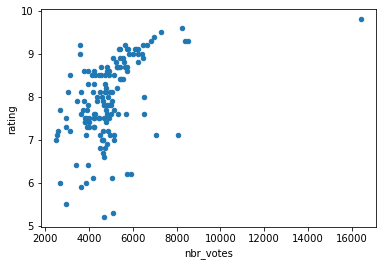
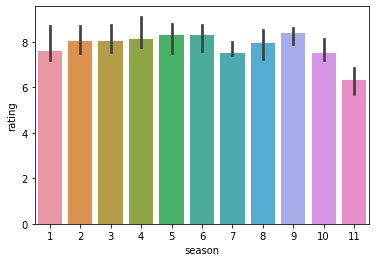
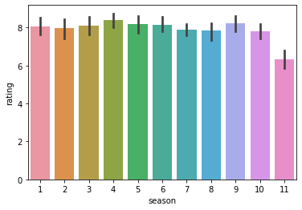
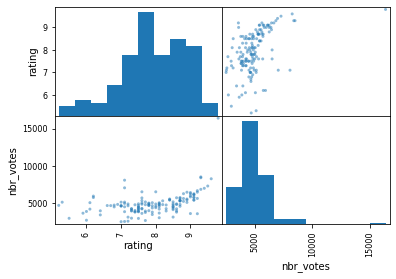

Topic 04-Part 2: Brief Intro to Pandas with Doctor Who#
import pandas as pd
import matplotlib.pyplot as plt
import seaborn as sns
## Read in the imdb_details.csv
df = pd.read_csv('imdb_details.csv')
# Preview the first 5 rows
display(df.head(2),df.tail(2))
| number | title | rating | nbr_votes | description | season | |
|---|---|---|---|---|---|---|
| 0 | 1 | Rose | 7.6 | 6504 | When ordinary shop-worker Rose Tyler meets a m... | 1 |
| 1 | 2 | The End of the World | 7.6 | 5684 | The Doctor takes Rose to the year 5 billion to... | 1 |
| number | title | rating | nbr_votes | description | season | |
|---|---|---|---|---|---|---|
| 146 | 10 | The Battle of Ranskoor Av Kolos | 5.5 | 2949 | Answering nine separate distress calls, the Do... | 11 |
| 147 | 11 | Resolution | 6.0 | 2690 | As the New Year begins, a terrifying evil is s... | 11 |
# Check out the .info
df.info()
<class 'pandas.core.frame.DataFrame'>
RangeIndex: 148 entries, 0 to 147
Data columns (total 6 columns):
# Column Non-Null Count Dtype
--- ------ -------------- -----
0 number 148 non-null int64
1 title 148 non-null object
2 rating 148 non-null float64
3 nbr_votes 148 non-null int64
4 description 148 non-null object
5 season 148 non-null int64
dtypes: float64(1), int64(3), object(2)
memory usage: 7.1+ KB
df
| number | title | rating | nbr_votes | description | season | |
|---|---|---|---|---|---|---|
| 0 | 1 | Rose | 7.6 | 6504 | When ordinary shop-worker Rose Tyler meets a m... | 1 |
| 1 | 2 | The End of the World | 7.6 | 5684 | The Doctor takes Rose to the year 5 billion to... | 1 |
| 2 | 3 | The Unquiet Dead | 7.6 | 5326 | The Doctor has great expectations for his late... | 1 |
| 3 | 4 | Aliens of London | 7.0 | 5116 | The Doctor returns Rose to her own time - well... | 1 |
| 4 | 5 | World War Three | 7.1 | 4943 | The Slitheen have infiltrated Parliament and h... | 1 |
| ... | ... | ... | ... | ... | ... | ... |
| 143 | 7 | Kerblam! | 6.4 | 3954 | A mysterious message arrives in a package addr... | 11 |
| 144 | 8 | The Witchfinders | 5.9 | 3635 | Arriving in 17th Century Lancashire, the TARDI... | 11 |
| 145 | 9 | It Takes You Away | 6.4 | 3404 | On the edge of a Norwegian fjord, in the prese... | 11 |
| 146 | 10 | The Battle of Ranskoor Av Kolos | 5.5 | 2949 | Answering nine separate distress calls, the Do... | 11 |
| 147 | 11 | Resolution | 6.0 | 2690 | As the New Year begins, a terrifying evil is s... | 11 |
148 rows × 6 columns
df
| number | title | rating | nbr_votes | description | season | |
|---|---|---|---|---|---|---|
| 0 | 1 | Rose | 7.6 | 6504 | When ordinary shop-worker Rose Tyler meets a m... | 1 |
| 1 | 2 | The End of the World | 7.6 | 5684 | The Doctor takes Rose to the year 5 billion to... | 1 |
| 2 | 3 | The Unquiet Dead | 7.6 | 5326 | The Doctor has great expectations for his late... | 1 |
| 3 | 4 | Aliens of London | 7.0 | 5116 | The Doctor returns Rose to her own time - well... | 1 |
| 4 | 5 | World War Three | 7.1 | 4943 | The Slitheen have infiltrated Parliament and h... | 1 |
| ... | ... | ... | ... | ... | ... | ... |
| 143 | 7 | Kerblam! | 6.4 | 3954 | A mysterious message arrives in a package addr... | 11 |
| 144 | 8 | The Witchfinders | 5.9 | 3635 | Arriving in 17th Century Lancashire, the TARDI... | 11 |
| 145 | 9 | It Takes You Away | 6.4 | 3404 | On the edge of a Norwegian fjord, in the prese... | 11 |
| 146 | 10 | The Battle of Ranskoor Av Kolos | 5.5 | 2949 | Answering nine separate distress calls, the Do... | 11 |
| 147 | 11 | Resolution | 6.0 | 2690 | As the New Year begins, a terrifying evil is s... | 11 |
148 rows × 6 columns
df.iloc[:,2:]#.loc['season']
| rating | nbr_votes | description | season | |
|---|---|---|---|---|
| 0 | 7.6 | 6504 | When ordinary shop-worker Rose Tyler meets a m... | 1 |
| 1 | 7.6 | 5684 | The Doctor takes Rose to the year 5 billion to... | 1 |
| 2 | 7.6 | 5326 | The Doctor has great expectations for his late... | 1 |
| 3 | 7.0 | 5116 | The Doctor returns Rose to her own time - well... | 1 |
| 4 | 7.1 | 4943 | The Slitheen have infiltrated Parliament and h... | 1 |
| ... | ... | ... | ... | ... |
| 143 | 6.4 | 3954 | A mysterious message arrives in a package addr... | 11 |
| 144 | 5.9 | 3635 | Arriving in 17th Century Lancashire, the TARDI... | 11 |
| 145 | 6.4 | 3404 | On the edge of a Norwegian fjord, in the prese... | 11 |
| 146 | 5.5 | 2949 | Answering nine separate distress calls, the Do... | 11 |
| 147 | 6.0 | 2690 | As the New Year begins, a terrifying evil is s... | 11 |
148 rows × 4 columns
# Display only the episdoes from season 2
df.loc[ (df['season'] == 2) & (df['rating']>=8.0),'title'] = 'Example'
df.loc[ (df['season'] == 2) & (df['rating']>=8.0)]
| number | title | rating | nbr_votes | description | season | |
|---|---|---|---|---|---|---|
| 13 | 0 | Example | 8.2 | 5291 | It's Christmas Eve, but this is to be a far fr... | 2 |
| 16 | 3 | Example | 8.4 | 5397 | The Krillitanes - aliens with a mix-and-match ... | 2 |
| 17 | 4 | Example | 9.3 | 8504 | The Doctor, Mickey and Rose land on a spaceshi... | 2 |
| 21 | 8 | Example | 8.7 | 5399 | When the Doctor and Rose become stranded on a ... | 2 |
| 22 | 9 | Example | 8.8 | 5609 | The Doctor risks his life to investigate the p... | 2 |
| 25 | 12 | Example | 8.5 | 4885 | When ghosts of loved ones appear all over the ... | 2 |
| 26 | 13 | Example | 9.3 | 6836 | Earth becomes a battleground for the Daleks an... | 2 |
df
| number | title | rating | nbr_votes | description | season | |
|---|---|---|---|---|---|---|
| 0 | 1 | Rose | 7.6 | 6504 | When ordinary shop-worker Rose Tyler meets a m... | 1 |
| 1 | 2 | The End of the World | 7.6 | 5684 | The Doctor takes Rose to the year 5 billion to... | 1 |
| 2 | 3 | The Unquiet Dead | 7.6 | 5326 | The Doctor has great expectations for his late... | 1 |
| 3 | 4 | Aliens of London | 7.0 | 5116 | The Doctor returns Rose to her own time - well... | 1 |
| 4 | 5 | World War Three | 7.1 | 4943 | The Slitheen have infiltrated Parliament and h... | 1 |
| ... | ... | ... | ... | ... | ... | ... |
| 143 | 7 | Kerblam! | 6.4 | 3954 | A mysterious message arrives in a package addr... | 11 |
| 144 | 8 | The Witchfinders | 5.9 | 3635 | Arriving in 17th Century Lancashire, the TARDI... | 11 |
| 145 | 9 | It Takes You Away | 6.4 | 3404 | On the edge of a Norwegian fjord, in the prese... | 11 |
| 146 | 10 | The Battle of Ranskoor Av Kolos | 5.5 | 2949 | Answering nine separate distress calls, the Do... | 11 |
| 147 | 11 | Resolution | 6.0 | 2690 | As the New Year begins, a terrifying evil is s... | 11 |
148 rows × 6 columns
## Get the # of episdoes in every season
num_episodes = df['season'].value_counts().sort_index()
num_episodes
1 13
2 14
3 14
4 14
5 13
6 14
7 15
8 12
9 14
10 13
11 12
Name: season, dtype: int64
df.groupby('season').size()
season
1 13
2 14
3 14
4 14
5 13
6 14
7 15
8 12
9 14
10 13
11 12
dtype: int64
## What is the max number of episodes in any season
num_episodes.max()
15
## What season # had the max number of episodes?
num_episodes.idxmax()
7
## What is the min,max,average, median, etc for the ratings column?
df['rating'].describecribe()
count 148.000000
mean 7.915541
std 0.938207
min 5.200000
25% 7.300000
50% 7.900000
75% 8.700000
max 9.800000
Name: rating, dtype: float64
df.describe().round(2)
| number | rating | nbr_votes | season | |
|---|---|---|---|---|
| count | 148.00 | 148.00 | 148.00 | 148.00 |
| mean | 6.51 | 7.92 | 4904.47 | 5.93 |
| std | 3.93 | 0.94 | 1478.47 | 3.13 |
| min | 0.00 | 5.20 | 2494.00 | 1.00 |
| 25% | 3.00 | 7.30 | 4163.00 | 3.00 |
| 50% | 6.50 | 7.90 | 4750.00 | 6.00 |
| 75% | 10.00 | 8.70 | 5401.25 | 9.00 |
| max | 14.00 | 9.80 | 16398.00 | 11.00 |
# Convert season and number columns into strings to combine
df['season'] = df['season'].astype('str')
df['number'] = df['number'].astype('str')
# Create a new index column that combines season # and episode numbver
df['new-index'] = df['season'] + '.' + df['number']
df
| number | title | rating | nbr_votes | description | season | new-index | |
|---|---|---|---|---|---|---|---|
| 0 | 1 | Rose | 7.6 | 6504 | When ordinary shop-worker Rose Tyler meets a m... | 1 | 1.1 |
| 1 | 2 | The End of the World | 7.6 | 5684 | The Doctor takes Rose to the year 5 billion to... | 1 | 1.2 |
| 2 | 3 | The Unquiet Dead | 7.6 | 5326 | The Doctor has great expectations for his late... | 1 | 1.3 |
| 3 | 4 | Aliens of London | 7.0 | 5116 | The Doctor returns Rose to her own time - well... | 1 | 1.4 |
| 4 | 5 | World War Three | 7.1 | 4943 | The Slitheen have infiltrated Parliament and h... | 1 | 1.5 |
| ... | ... | ... | ... | ... | ... | ... | ... |
| 143 | 7 | Kerblam! | 6.4 | 3954 | A mysterious message arrives in a package addr... | 11 | 11.7 |
| 144 | 8 | The Witchfinders | 5.9 | 3635 | Arriving in 17th Century Lancashire, the TARDI... | 11 | 11.8 |
| 145 | 9 | It Takes You Away | 6.4 | 3404 | On the edge of a Norwegian fjord, in the prese... | 11 | 11.9 |
| 146 | 10 | The Battle of Ranskoor Av Kolos | 5.5 | 2949 | Answering nine separate distress calls, the Do... | 11 | 11.10 |
| 147 | 11 | Resolution | 6.0 | 2690 | As the New Year begins, a terrifying evil is s... | 11 | 11.11 |
148 rows × 7 columns
df.dtypes
number object
title object
rating float64
nbr_votes int64
description object
season object
new-index object
dtype: object
# convert the new_index column to float and set it as the index
df['new-index']=df['new-index'].astype(float)
df.set_index('new-index',inplace=True)
df
| number | title | rating | nbr_votes | description | season | |
|---|---|---|---|---|---|---|
| new-index | ||||||
| 1.10 | 1 | Rose | 7.6 | 6504 | When ordinary shop-worker Rose Tyler meets a m... | 1 |
| 1.20 | 2 | The End of the World | 7.6 | 5684 | The Doctor takes Rose to the year 5 billion to... | 1 |
| 1.30 | 3 | The Unquiet Dead | 7.6 | 5326 | The Doctor has great expectations for his late... | 1 |
| 1.40 | 4 | Aliens of London | 7.0 | 5116 | The Doctor returns Rose to her own time - well... | 1 |
| 1.50 | 5 | World War Three | 7.1 | 4943 | The Slitheen have infiltrated Parliament and h... | 1 |
| ... | ... | ... | ... | ... | ... | ... |
| 11.70 | 7 | Kerblam! | 6.4 | 3954 | A mysterious message arrives in a package addr... | 11 |
| 11.80 | 8 | The Witchfinders | 5.9 | 3635 | Arriving in 17th Century Lancashire, the TARDI... | 11 |
| 11.90 | 9 | It Takes You Away | 6.4 | 3404 | On the edge of a Norwegian fjord, in the prese... | 11 |
| 11.10 | 10 | The Battle of Ranskoor Av Kolos | 5.5 | 2949 | Answering nine separate distress calls, the Do... | 11 |
| 11.11 | 11 | Resolution | 6.0 | 2690 | As the New Year begins, a terrifying evil is s... | 11 |
148 rows × 6 columns
## plot scatterplot of ratings number of ratings x ratings using pandads
df.plot(x='nbr_votes',y='rating',kind='scatter')
<AxesSubplot:xlabel='nbr_votes', ylabel='rating'>

np
<module 'numpy' from '/opt/anaconda3/envs/learn-env/lib/python3.6/site-packages/numpy/__init__.py'>
## Using seaborn, Plot the average rating for every seasons +/- STD
sns.barplot(data=df,x='season',y='rating',estimator=np.median)
<AxesSubplot:xlabel='season', ylabel='rating'>

sns.barplot(data=df,x='season',y='rating')
<AxesSubplot:xlabel='season', ylabel='rating'>

pd.plotting.scatter_matrix(df)
array([[<AxesSubplot:xlabel='rating', ylabel='rating'>,
<AxesSubplot:xlabel='nbr_votes', ylabel='rating'>],
[<AxesSubplot:xlabel='rating', ylabel='nbr_votes'>,
<AxesSubplot:xlabel='nbr_votes', ylabel='nbr_votes'>]],
dtype=object)

df2 = df.copy()